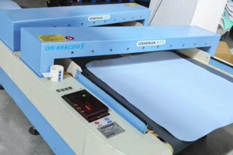

Unsere Fabrik und Werkstätten
Jeder Schritt von der Stoffrolle bis zum Exportkarton, der Reihe nach. In diesen Werkstätten werden Ihre Unterlagen hergestellt.
 101
101So entsteht eine Unterlage
101Unsere Produktionsstätte
Unterlagen entstehen unter einem Dach: Kaschieren, Zuschnitt, Steppen, Nähen, Kontrolle und Verpackung, danach Lager und Exportverladung. Ein Standort bedeutet ein Qualitätssystem und kurze Lieferzeiten.
| Prozesse im Haus | Kaschieren, Zuschnitt, Steppen, Nähen, Kontrolle, Verpackung |
|---|---|
| Produkte | Bettunterlagen, Haustierunterlagen, Sitzauflagen, Wickelunterlagen, Lätzchen für Erwachsene |
| Qualitätssystem | ISO 9001; BSCI-Sozialaudit |
 50
50Kaschierwerkstatt
Die TPU-Folie wird auf einer kontinuierlichen Linie auf den Rückseitenstoff kaschiert. Haftfestigkeit und Wasserdichtheit bestimmen die Lebensdauer einer Unterlage, daher wird jede Rolle vor dem Zuschnitt geprüft.
| Sperrschicht | TPU-Folie 0,025 mm, 30 g/m²; oder PVC |
|---|---|
| Prüfung | Wasserdichtheitsprüfung je Rolle; Haftprüfung |
 51
51Automatischer Zuschnitt
Die Stofflagen werden auf automatischen Zuschnitttischen ausgelegt und geschnitten, sodass jede Größe einer Lieferung dem Datenblatt entspricht.
| Toleranz | ±2 cm auf die Fertiggröße |
|---|---|
| Größen | 19 Standardgrößen und jede Sondergröße |
 52
52Steppwerkstatt
Mehrnadel-Steppmaschinen verbinden Oberstoff und Saugkern. Eine dichte Steppung verhindert, dass sich der Kern nach Hunderten Wäschen zusammenschiebt.
| Muster | 12 Standardmuster oder eine individuelle Logo-Steppung |
|---|---|
| Kern | 200 / 230 / 270 / 340 g/m² |
 53
53Nählinien
Die Kanten werden mit doppelt genähtem Schrägband eingefasst; Griffe, Einstecklaschen und Etiketten werden hier angenäht.
| Kante | Schrägband-Einfassung, doppelt genäht, abgerundete Ecken |
|---|---|
| Extras | Griffe (4 / 6 / 8), Laschen, Web- und Pflegeetiketten |
 105
105Überblick über die Nähwerkstatt
Mehrere Nählinien arbeiten parallel, sodass gemischte Aufträge (mehrere Ausführungen, Größen und Farben) gleichzeitig gefertigt werden.
| Gemischte Aufträge | Mehrere Ausführungen, Größen und Farben pro Auftrag |
|---|

54Kontrolle
Fertige Unterlagen werden vor dem Verpacken auf Größe, Nähte, Einfassung, Flecken und Wasserdichtheit geprüft. Die Endkontrolle erfolgt nach AQL 2.5; externe Prüfer sind willkommen.
| Fertigung | Prüfung von Größe, Nähten und Einfassung |
|---|---|
| Endkontrolle | AQL-2.5-Bericht pro Auftrag |
 55
55Verpackung und Lager
Die Unterlagen werden nach Ihrer Verpackungsvorgabe gefaltet, verpackt, etikettiert und in Exportkartons verladen. Jeder Karton wird gewogen, um Stückzahlfehler zu erkennen.
| Verpackung | Polybeutel, Kopfkarte, Farbkarton, FBA-Etiketten |
|---|---|
| Karton | Exportkarton, Gewichtsprüfung jedes Kartons |
| Versand | FOB / CIF / DDP |
Zertifikate und Prüfberichte
Kopien mit Nummer und Geltungsbereich erhalten Sie mit Ihrer Bestellung.
 103
103 104
104Was wir nachweisen können
| Stoffe | Stoffoptionen nach OEKO-TEX® Standard 100 (Produktklasse I für Babys) |
|---|---|
| Management | Qualitätsmanagementsystem ISO 9001; BSCI-Sozialaudit |
| Chemische Prüfungen | REACH-SVHC-Prüfung; CPSIA-Prüfung für Babyprodukte (USA) |
| Leistung | Wasserdichtheitsprüfung (ISO 811) nach 50 / 100 / 300 Wäschen; Waschbeständigkeit (ISO 6330); Saugleistung je Stufe |
| Endkontrolle | AQL-2.5-Bericht pro Auftrag; externe Prüfung willkommen |
Bereit für Ihre eigene Linie waschbarer Unterlagen?
Nennen Sie uns Markt, Größen und Mengen. Innerhalb eines Werktags erhalten Sie Datenblatt und Staffelpreise.